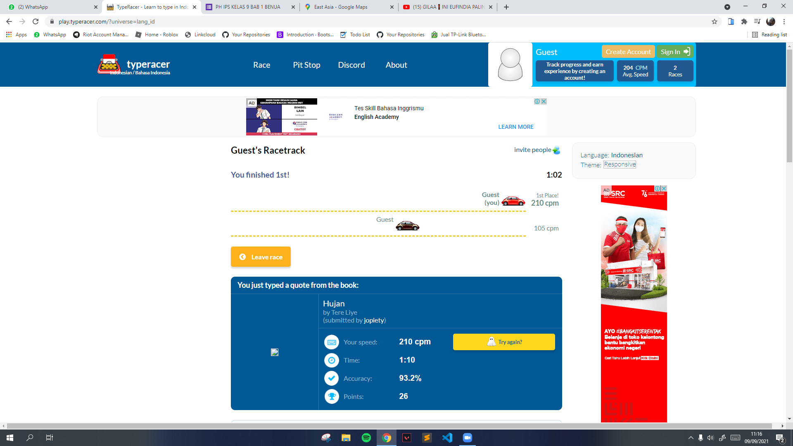

Hai
gw zidan, yap gw tau lu bakal pindah ke medan buat bbrpa tahun keknya (gw gatau brp tahun), ya walaupun lu ga pindah sekolah selama masi online yaa gpapa laa gw gabut bikin ini dan mungkin lu bakal ngerasa kek baca koran atau buku cerita? ntahlah.
dan maap kalo isi nya kebanyakan tulisan doang, kek gaada design nya soalnya gw gatau mau di design kek gimana, soalnya ini dari web ini cuma mau nyampein dan ceritain beberapa hal ke lu.
aneh gasi klo gw bikin kek gini, kek gabakal ketemu lagi gtu? eh tp kan emg gaakan ketemu lagi kecuali ada sesuatu.
yaa mungkin gw mau ceritain bbrapa hal yg gw inget dan maap kalo cerita nya ga berurutan soalnya gw ga apal urutannya hehe.
awal mula gw kenal lu tu pas kls 7, gatau kapan gw lupa dan gw jg gatau bisa deket karena apa,
seinget gw pas hari pertama lu duduk dibelakang gasi? gw lupa.
dan yaa gw inget pas lu nangis gara gara kena sepatu yg gw lempar, asli itu gw ga sengajaa.
trs gw juga inget pas lu jadi bendahara, si vaza deket2 ama lu wkwk (cieee).
oiya, gw kan pernah ke rumah lu buat ngerjain tugas kelomok gtu kan, trs gw liat nama kontak gw di lu "anak ilang", ish asli pas mau pulang tuh gw beneran kek anak ilang, yg laen udah pada pulang eh gw sisa cowo sndiri, gw berdiri ae gtu diem di depan rumahlu sambil nungguin abang gojek.
nah trs kan gw jdi terinspirasi gtu kan, gw jdi ganti nama kontaklu jadi "cebol" trs lu nya ngambek:v
gw inget pas waktu gw dm nanyain lu suka ama siapa kan, trs lu blg "dzaka" tp 1 huruf 1 huruf, trs gw stalking nyari ig dia di followers lu, eh ketemu :)
trs gw juga inget pas lu suka ama riji WKWKWK (keknya yg ini gausa gw ceritain kali ye, udah sering di wa)
hmm apa lagi yak?
ohh iyaa, pas alji suka sama lu, trs lu bilang ke gw, nah trs kan yaa gw ga cepuin tuh ke siapa2, eh trs gw kaget kok adhit bisa tau, trs gw dituduh cepu ama lu padahal gw ga ngapa2in (hiks parah bgt), eh ternyata alji yg kasi tau ke adhit, cih.
dan.. yap skrg bagian waktu gw mau blg suka ke lu.
tadinya kan yaa gw tu gamau blg ke lu, jdi yaa gw diem2 aja, terus nii tiba2 lu dm ke gw klo lu suka ama gw, trs gw kan kaget
gw jdi salting, trs yaa gara2 itu gw blg klo gw juga suka ama lu, tapi tapi tapi tapi
mungkin itu keesokan hari nya atau bbrp hari atau pas sore nya? gw lupa, TRS TB TB LU BILANG ITU PRANK, kan gw tu kek...
beuh, mana gw udah blg suka ke lu gmna ni, dan lanjutannya gw lupa tp seinget gw tu akhirnya lu blg klo yaa emg suka?
ah iya, keknya ada yg kelewat.
lu inget ga yg deema nulis di kertas isi nya kek ada tulisan lagu buatan ust dim? nah itu kan gw nemu di meja guru tuh pas lu ga masuk, trs gw masukkin ke quran lu, trs gw ngakak pas liat lu nemu itu pas lagi quran WKWKWKWK.
dan salah satu momen yg paling gw inget itu pas lu lari lari di kelas dikejar kejar ama deema, gatau dah tu ngapain tp lucu aja gtu.
trs gw juga inget pas mapel b ing, lu ngobrol mulu ama deema trs diomelin ama pak icin wkwk.
ahh ada lagi nih, pas lagi jaman2nya ejen ali the movie wkwkwk, gw liat lu ama rara maenan ketapel pake kertas.
nah skrg bagian pas kls 8.
sebenernya pas kls 8 gaada yg terlalu seru si karna yaa online, yaa walaupun kls 7 juga udah ngerasain online, lagian pas kls 8 kita ga sekelas dan yaa palingan kita cuma mabar gtu.
yaa emg momen di smp paling seru pas kls 7, asik bgt.
dan yaa ini emg gaadil si, gw nulis momen di kls 7 ampe banyak banget dan kls 8 cuma dikit, soalnya biasa biasa aja, dan skrg bagian kls 9.
ini bakalan jadi bagian yg paling kasian buat gw, karna tmn tmn gw tu pada pindah, lu mau pindah ke medan, gilang udah pindah sekolah, trs udah mau lulus jg, kan jadi bakalan pisah gtu, pasti ada aja tu yg namanya lost contact.
yap, di kelas 9 gw kan yaa biasa balapan ngetik yang gw jarang banget menang, pernah si menang tapi lu nya dipanggil guru ama blm siap, tpi yaa ini bisa dibilang foto yang langka:v

trs yaa sebenernya lu org yg sempet bikin gw gamon, eh tpi gw kan emg lama kalo mup on 🙃.
eh btw, gw bikin ini tadinya pen gw selesain semuanya di hari jumat, tpi gw sakit trs sabtu nya masi istirahat jdi gw baru lanjutin ini lagi di hari minggu.
oiya lanjuutt
di kelas 9 itu bisa dibilang pas foto osis kmrn itu ketemuan terakhir, dan yaa pas cewe2 dah pada pulang tu gw liat lu lgi duduk di deket gerbang sekolah smbil maen hp sndirian (wkwkw kasian bgt gada temennya), tdinya pen gw sapa si tp gatau knpa gajadi.
dan yak, sekian buat sesi "Sedikit Cerita" yg gw sndiri sadar kalo ceritanya itu ga sedikit hehe.
semoga aja lu baca semuanya ga di skip dan gaada yg kelewat soalnya gw nyari ide dan mikirnya itu lamaaaa dan yaa itu aja si.
btw gw ada nyimpen beberapa aib lu si, ntah ini bisa dibilang aib atau foto bagus/cakep tpi yaa gitulah intinya.
sblmnya gw mo minta maap dlu gara2 nyimpen foto2 lu, yaa gatau si bakal dimaapin atau ngga, tdinya gw gamau masukkin ke sini tpi yaa...
dan sbnrnya gw rada takut lu marah si jdiii.. yg bisa akses foto2nya cuma yg tau pw nya aja (kecuali kalo ada yg ngecek di source code nya 🙃)